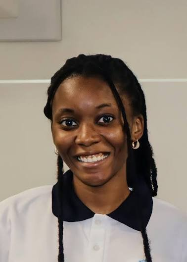

Windhoek, Namibia · NUST · ICTechHub
Selma Auala
Human–computer interaction researcher. I co-design virtual reality, augmented reality and robots with indigenous communities and children in Namibia.
- 26publications
- 7awards & scholarships
- 6partner countries

Designing with communities, not for them
My work sits where human–computer interaction, participatory design and indigenous knowledge meet.
I am the Technology Innovation and Community Coordinator at the Inclusive and Collaborative Local Tech Innovation Hub (ICTechHub) at the Namibia University of Science and Technology (NUST), and a part-time lecturer in the Department of Software Engineering. I also coordinate the AI Language Sprint, which collects language data for Namibian languages with community translators.
Most of my research happens in the field. With OvaHimba and Ju|’hoansi San communities, and with primary school learners in Katutura, I run co-design workshops where the people who will use a technology shape it from the first sketch. Out of this have come VR experiences such as HimbaVerse and Sanscape, an extended reality escape room, and robots designed by Namibian children.
I hold a BSc and a BSc Honours in Computer Science (Software Development) from NUST, spent a semester at Aalborg University in Denmark, and am completing a Master of Computer Science at NUST. In 2026 I was selected as a Young Researcher for the Heidelberg Laureate Forum.
What I’m building
-
Co-creating socio-cultural VR learning experiences for primary school learners
2024–VR learning experiences designed with learners, educators and communities, aiming to bring indigenous knowledge into Namibia’s primary school curriculum. This is my MCS research.
Main researcher: facilitated workshops, designed and built parts of the VR system, authored the publications.
-
HimbaVerse
2024–VR experiences made with the OvaHimba community to represent their culture faithfully and keep their indigenous knowledge alive.
Facilitated co-design workshops, built parts of the system and managed the design-to-development handover.
-
Sanscape
2022–VR experiences made with Ju|’hoansi San community members, showing their traditions and customs as they want them shown.
Coordinated fieldwork, facilitated workshops and built parts of the system.
-
AI Language Sprint · NamTalkies
2026–A web platform where community translators and validators build language data for Namibian languages, starting with field workshops in Tsumkwe.
Project coordinator: field trips, budget, funder reporting and supervision of interns.
Also involved in
Enacting Future Robots
Children in Namibia and Denmark co-design a robot for sustainable shopping. With Aalborg University.
Robots and intercultural interaction with Haru
Children in Namibia, Denmark, Japan and the USA test robots for intercultural understanding.
Extended reality escape room
VR, AR and sensor stations built around a Candyland designed by People’s Primary School learners.
People’s Primary School Interactive Library
Children from Katutura co-creating EdTech in their own interactive tech library.
Beyond the Imaginable
Holographic and VR telepresence for remote learning. Led by the University of Turku.
National Action Plan for Indigenous Languages
UNESCO-initiated plan for Namibia. I ran validation workshops and wrote the final draft.
SESA: Smart Energy Solutions for Africa
EU project with nine African countries. Community coordinator for Namibia.
Awards and honours
- Young ResearcherHeidelberg Laureate Forum
- SIGCHI Fund for AfriCHI MenteesACM SIGCHI
- Best Notes Paper Award5th African Human Computer Interaction Conference (AfriCHI)
- Best Work in Progress Paper AwardACM International Conference on Interactive Media Experiences (IMX)
- Gary Marsden Travel AwardACM SIGCHI
- ACM Women’s ScholarshipACM-W
- Best Full Paper Award and Best Demo Paper Award4th African Human Computer Interaction Conference (AfriCHI)
Papers and chapters
- Grounding Meaningful Virtual Reality Learning Experiences in Ju/’hoansi Teaching and Learning PracticesAuala, S., Kandjibi, S., Winschiers-Theophilus, H., & Goagoses, N.Reorienting the Digital: Ethics, Ontology, and Sustainable Futures, Springer Nature, pp. 479–490
- Promoting Ocean Stewardship by Embedding an Ocean Literacy VR Experience in a Traditional Topnaar NarrativeDyakugha, R., Animas, T., Rodil, K., Auala, S., & Winschiers-Theophilus, H.ACM IMX 2026, pp. 610–614
- Culturally Informed Colour Coding in Virtual Reality: Preserving ovaHimba HeritageKaunatjike, T., Arendttorp, E. M. N., Auala, S., & Winschiers-Theophilus, H.ACM IMX 2026, Athlone, Ireland, pp. 537–542
- Closing the Distance: Transferability and Co-design of a Starlore VR Prototype with Ju/’hoansi San Elders in NamibiaRodil, K., N!aici, !Amace, Christiansen, F. R., Hollensberg, L. N., Julsgaard, K., Auala, S., Maasz, D., Auala, S. L., & Winschiers-Theophilus, H.ACM IMX 2026, Athlone, Ireland, pp. 424–429
- Parrobot: A Low-Cost Platform for Human–Robot Interaction Research and EducationIsuf, V., Rosenlund, E., Auala, S., Nepolo, E., Winschiers-Theophilus, H., Krummheuer, A. L., & Rehm, M.35th IEEE International Conference on Robot and Human Interactive Communication (RO-MAN)
- Integration of Games and Models as an Approach to Support Inclusive Environmental ConservationSamuel, M., Duthie, B., Corcoran, C., Auala, S., & Bunnefeld, N.21st International Conference on the Foundations of Digital Games, pp. 1–5
- Not Becoming Friends: Situated Categorization Processes in Child-Robot InteractionKrummheuer, A. L., Rehm, M., Yi, Z., et al., Auala, S., Winschiers-Theophilus, H., et al.Robophilosophy 2026 (in press)
- Creating a Responsible AI Framework for Cultural Validity: Exploring Heritage Futures with an Ovahimba Indigenous Community of NamibiaAuala, S., Mbinge, U., Ndjao, L., Van Niekerk, K., Nathingo, N., Nehoya, R., Smith, R., Rodil, K., Kapuire, G., Maasz, D., et al.5th African Human Computer Interaction Conference (AfriCHI), pp. 358–368
- Co-Designing Learning Supports for Cultural Virtual Reality Experiences with Namibian Primary School LearnersAuala, S., Winschiers-Theophilus, H., & Goagoses, N.24th Interaction Design and Children Conference (IDC), pp. 961–966
- Learn to Hunt like a San: A Virtual Reality Experience Blending Traditional Practices with Formal EducationAuala, S., & Winschiers-Theophilus, H.ACM IMX 2025, pp. 350–352
- Building Friendships Across Borders: The Role of Social Robot Haru in Children Group Communication and Connection DevelopmentYi, Z., Levinson, L., Delgado-Chaves, D., et al., Auala, S., et al.34th IEEE RO-MAN, pp. 65–72
- “It’s Technology that Gets us Together”: Exploring Teachers’ Perspectives on Holographic Telepresence for Synchronous Hybrid Learning in SchoolsMontero, C. S., Han, X., Auala, S., Hahta, S., Suovuo, T., Rötkönen, E., Winschiers-Theophilus, H., & Sutinen, E.IEEE ICALT 2025, pp. 271–275
- Co-creating a VR Narrative Experience of Constructing a Food Storage Following OvaHimba Traditional PracticesPeter, K., Makosa, I., Auala, S., Ndjao, L., Maasz, D., Mbinge, U., & Winschiers-Theophilus, H.ACM IMX 2025, pp. 418–423
- Teachers and Students Envisioning Mixed Reality Remote Learning: A Qualitative Exploration on Fostering Academic EngagementGoagoses, N., Winschiers-Theophilus, H., Auala, S., Pope, N., Rötkönen, E., Itenge, H., Suero Montero, C., Suovuo, T., & Sutinen, E.Technology, Knowledge and Learning, 30(2), 685–709
Show 2023–2024 (12 papers)
- Renegotiating Responsible AI: Contextualising AI Futures with Indigenous Communities in NamibiaSmith, R. C., Mbinge, U., Auala, S., Kandjengo, S., Till, S., Wanvig, R., Indongo, N., Kays, R., Kapuire, G. K., & Winschiers-Theophilus, H.ACM CHI Conference on Human Factors in Computing Systems
- Enacting Future Robots with Namibian ChildrenKrummheuer, A., Auala, S., Itenge, H., & Winschiers-Theophilus, H.International Conference on Social Robotics, Springer, pp. 192–201
- Co-design of an Extended Reality Escape Room with Primary School StudentsBecker, K., Itenge, H., Auala, S., Isaacs, J.-D., & Winschiers-Theophilus, H.23rd ACM Interaction Design and Children Conference (IDC), pp. 744–748
- Primary School Students Designing for Future Relationship Building in Extended Realities: Encounters with Live Human HologramsGoagoses, N., Winschiers-Theophilus, H., Mendes, J., Auala, S., & Sutinen, E.Participatory Design Conference 2024, Vol. 2, pp. 13–18
- A Dynamically Evolving Multicultural Escape Suitcase Travelling a Participatory JourneyBecker, K., Winschiers-Theophilus, H., Maasz, D., Auala, S., Itenge, H., Isaacs, J.-D., Peter, K., & Goagoses, N.Participatory Design Conference 2024, Vol. 3, pp. 3–5
- Community Podcast and Soundscape Creation on Issues that Matter to Indigenous People Across the GlobeBecker, K., Kandjengo, S., Kaulbach, P., Maasz, D., Auala, S., Isaacs, J.-D., & Winschiers-Theophilus, H.Participatory Design Conference 2024, Vol. 3, pp. 6–9
- A Community-Based Exploration into Gesture-Driven Locomotion Control in Virtual RealityArendttorp, E., Auala, S., Winschiers-Theophilus, H., Rodil, K., & Magot, S.4th African Human Computer Interaction Conference (AfriCHI), pp. 180–189
- Let’s Dance/Hi//Ka//Kusi with Non-Player Character Ju/’hoansi Women in Virtual RealityJohansen, F. B. K., Jørgensen, M. R., Kjeldsen, T. K. K., Magot, S., Kandjengo, S., Isaacs, J.-D., Auala, S., Kays, R., Arendttorp, E. M. N., Winschiers-Theophilus, H., et al.4th AfriCHI, pp. 241–245
- Bridging Spaces: A Student Perspective on Designing for Remote Presence with 3D HologramsMendes, J., Auala, S., Winschiers-Theophilus, H., Suovuo, T., Sutinen, E., Suero Montero, C., & Goagoses, N.4th AfriCHI, pp. 249–253
- Co-designing Technologies with ChildrenItenge, H., Kays, R., Auala, S., Chivuno-Kuria, S., Peter, K., & Makosa, I.4th AfriCHI, pp. 300–303
- An AR Game for Primary Learners to Safeguard Intangible Cultural Heritage of the OvaHimba TribePeter, K., Auala, S., & Winschiers-Theophilus, H.ACM IMX 2023, pp. 359–361
- Wearing a HoloLens: A New Dimension to Remote Presence in EducationHahta, S., Teimouri, M., Suovuo, T., Auala, S., Rötkönen, E., Mendes, J., Goagoses, N., Winschiers-Theophilus, H., & Sutinen, E.11th International Conference on Communities & Technologies, EUSSET
Where I’ve worked
- AI Sprint Project CoordinatorDepartment of Software Engineering, NUST
- Part-Time LecturerFaculty of Computing and Informatics, NUST
- Technology Innovation and Community CoordinatorICTechHub, NUST. Multi-year projects with indigenous communities; research collaborations with Denmark, Finland, Germany and the USA; co-organiser of the Indigenous Knowledge Fair 2025.
- SESA Project CoordinatorSmart Energy Solutions for Africa (EU)
- Interactive Exhibition Co-ChairAfriCHI, two conference cycles
- Research InternArchitecture, Design & Media Technology, Aalborg University, Denmark
- EduTech Developer and FacilitatorICTechHub, NUST
Education
- Master of Computer ScienceNUST, Windhoek
- BSc (Hons) Computer Science: Software DevelopmentNUST, Windhoek
- Exchange semester in MediologyAalborg University, Denmark
- BSc Computer Science: Software DevelopmentNUST, Windhoek
Service
- Interactive Exhibition Co-Chair, AfriCHI 2023–2025
- Co-organiser, Indigenous Knowledge Fair 2025
- Student volunteer, Participatory Design Conference 2024, Sibu, Malaysia
- Student volunteer, ACM IMX 2023, Nantes, France
Teaching and supervision
Design Thinking
Undergraduate group projects with prototype pitches, peer evaluation and poster presentations.
Database Fundamentals
Lectures and practicals for software engineering students.
Theses co-supervised · main supervisor Prof. Heike Winschiers-Theophilus
- From Tradition to Technology: Co-Designing a Digital Game Integrating Ju/’hoansi Hunter-Gatherer Practices · Orilio Khan-Khan Prince Naobeb
- Enhancing VR experiences through motion capture integration for realistic NPC animation and interaction · Jose Kaboy Clayton, 2026–
- Enhancing first-time VR experiences for cultural learning and education systems · Robert Hihangwapo, 2025–
- Assessing observational learning from non-player characters in cultural VR environments · Shali Kandjimbi, 2025
- Development of student-defined gestures for NPC interactions in cultural learning VR · Peter Van Wyk, 2025
What’s new
- Selected as a Young Researcher for the Heidelberg Laureate Forum.
- Ran a three-day AI Language Sprint workshop in Tsumkwe with 18 community translators and validators.
- Three co-authored papers at ACM IMX 2026 in Athlone, Ireland.
- Best Notes Paper Award at AfriCHI 2025.
Get in touch
- selmaauala15@gmail.com
- ORCID
- 0009-0007-8843-5445
- Office
- ICTechHub, Namibia University of Science and Technology, Windhoek
- linkedin.com/in/selma-auala
- Scholar
- Google Scholar profile